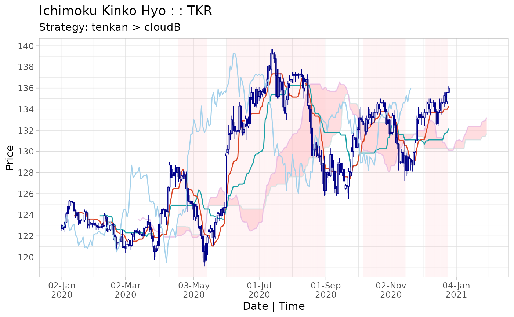
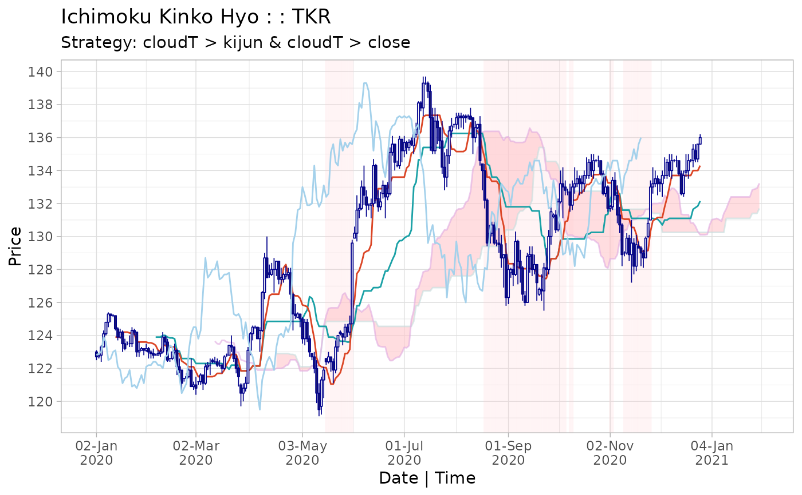

Create ichimoku cloud strategies using the indicator condition 'long / short while c1 > c2'. Complex strategies can be formulated as combined 'c1 > c2 & c3 > c4' (both conditions must be satisfied) or asymmetric 'c1 > c2 x c3 > c4' (where 'c1 > c2' denotes the entry and 'c3 > c4' the exit indicator).
strat(
x,
c1 = c("close", "chikou", "open", "high", "low", "tenkan", "kijun", "senkouA",
"senkouB", "cloudT", "cloudB"),
c2 = c("tenkan", "kijun", "senkouA", "senkouB", "cloudT", "cloudB", "chikou", "close",
"open", "high", "low"),
c3 = c("close", "chikou", "open", "high", "low", "tenkan", "kijun", "senkouA",
"senkouB", "cloudT", "cloudB"),
c4 = c("tenkan", "kijun", "senkouA", "senkouB", "cloudT", "cloudB", "chikou", "close",
"open", "high", "low"),
dir = c("long", "short"),
type = 2
)an ichimoku object.
[default 'close'] column name specified as a string.
[default 'tenkan'] column name specified as a string.
(optional) column name specified as a string.
(optional) column name specified as a string.
[default 'long'] trade direction, either 'long' or 'short'.
[default 2] if 'c3' and 'c4' are specified, type 2 will create the combined strategy 'c1 > c2 & c3 > c4' whilst type 3 will create the asymmetric strategy 'c1 > c2 x c3 > c4'.
An ichimoku object augmented with the strategy.
The following assumption applies to all strategies: confirmation of whether a condition is satisfied is received at the 'close' of a particular period, and a transaction is initiated at the immediately following 'open'. All transactions occur at the 'open'.
By default, the periods in which the strategy results in a position is
shaded on the ichimoku cloud chart and the strategy is printed as the
chart message (if not otherwise specified). To turn off this behaviour,
pass the strat = FALSE argument to plot() or iplot().
The ichimoku object is augmented with the following additional elements:
Columns [numeric]:
$cond: a boolean vector if the indicator condition is met
$posn: a boolean vector indicating if a position is held
$txn: a vector representing the transactions to implement
the position (1 = enter position, -1 = exit position)
$logret: a vector of log returns
$slogret: a vector of log returns for the strategy
$ret: a vector of discrete returns
$sret: a vector of of discrete returns for the strategy
Attributes:
$strat: the strategy summary [matrix]
The strategy summary may be accessed by the summary() method for
ichimoku objects or via look.
For complex strategies: 's1' denotes the strategy 'c1 > c2' and 's2' denotes the strategy 'c3 > c4'.
Combined strategy 's1 & s2': indicator conditions in 's1' and
's2' have to be met simulateneously for a position to be taken. The
column $cond will show when both conditions are met.
Asymmetric strategy 's1 x s2': indicator condition in 's1' has
to be met to enter a position, and indicator condition in 's2' to exit
a position. These rules are applied recursively over the length of the
data. The column $cond will show when the indicator condition
is met in 's1'
Please refer to the strategies vignette by calling:
vignette("strategies", package = "ichimoku")
cloud <- ichimoku(sample_ohlc_data, ticker = "TKR")
strat <- strat(cloud, c1 = "tenkan", c2 = "cloudB", dir = "short")
summary(strat)
#> [,1]
#> Strategy "tenkan > cloudB"
#> --------------------- "----------"
#> Strategy cuml return % 10
#> Per period mean ret % 0.0536
#> Periods in market 127
#> Total trades 4
#> Average trade length 31.75
#> Trade success % 75
#> Worst trade ret % -1.42
#> --------------------- "----------"
#> Benchmark cuml ret % -5.24
#> Per period mean ret % -0.0302
#> Periods in market 178
#> --------------------- "----------"
#> Direction "short"
#> Start 2020-04-19 23:00:00
#> End 2020-12-23
#> Ticker "TKR"
plot(strat)

strat2 <- strat(cloud, c1 = "cloudT", c2 = "kijun", c3 = "cloudT", c4 = "close")
summary(strat2)
#> [,1]
#> Strategy "cloudT > kijun & cloudT > close"
#> --------------------- "----------"
#> Strategy cuml return % 9.82
#> Per period mean ret % 0.0527
#> Periods in market 63
#> Total trades 5
#> Average trade length 12.6
#> Trade success % 80
#> Worst trade ret % -0.97
#> --------------------- "----------"
#> Benchmark cuml ret % 5.53
#> Per period mean ret % 0.0302
#> Periods in market 178
#> --------------------- "----------"
#> Direction "long"
#> Start 2020-04-19 23:00:00
#> End 2020-12-23
#> Ticker "TKR"
plot(strat2)
